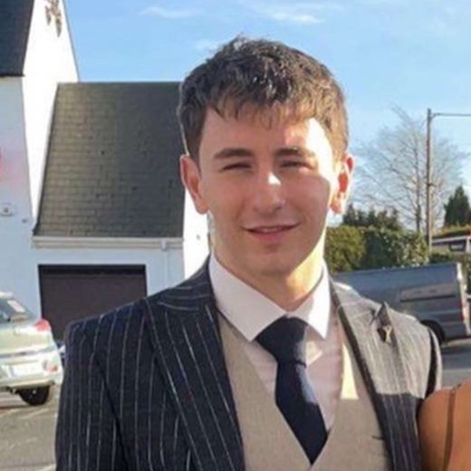

<div class="content-container">
    <div class="main-content">
        <div class="photo">
            
        </div>
        <div class="text">
            <h2>Hi! My name is Karl, and I am a software developer from Donegal, Ireland.</h2>
            <h4>
                I love all aspects of development, but I especially love front end and web design.<br>
                I am currently a student in my final year of Computer Applications and Software Engineering (CASE) in
                Dublin City University, and I hope to graduate in 2023. <br><br>
                This is my first personal webpage and I am excited to improve and update it regularly as a display of my abilities as well as a portfolio for potential employers.<br><br>
                If you'd like to find out more about me and how I became interested in software development, click the 'About me' section at the top of the page. <br><br>
                If you don't want to mess around, a quick link to some of my socials can be found below!<br><br>
                Happy Browsing :)
            </h4>
            <div class="socials">
                <ul>
                    <li><fa-icon [icon]="faFacebook"></fa-icon> Facebook</li>
                    <li><fa-icon [icon]="faLinkedin"></fa-icon> LinkedIn</li>
                    <li><fa-icon [icon]="faGithub"></fa-icon> Github</li>
                    <li><fa-icon [icon]="faInstagram"></fa-icon> Instagram</li>
                </ul>
            </div>
        </div>
    </div>
</div>